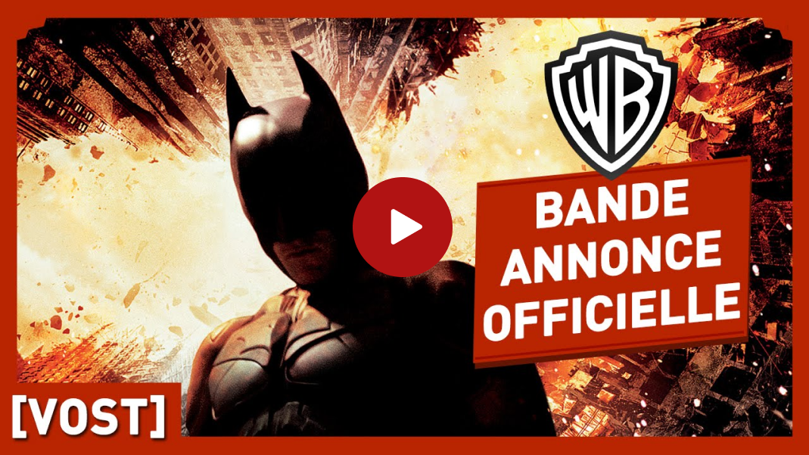

<!doctype html>
<html lang="fr">
<head>
    <meta charset="UTF-8">
    <meta name="viewport"
          content="width=device-width, user-scalable=no, initial-scale=1.0, maximum-scale=1.0, minimum-scale=1.0">
    <meta http-equiv="X-UA-Compatible" content="ie=edge">
    <title>BATMAN1</title>
    <link rel="stylesheet" href="styles/style.css">
</head>
<body>
<header>
    <nav>
        
        <p>Home</p>
    </nav>
</header>
<main>
    <div id="fondBatmanRouge">
        <div>
            <p>Au nom de ses parents assassinés, Bruce Wayne mène une guerre éternelle contre les
                criminels de Gotham City. Il est vengeur. Il est la nuit.</p>
            <h1>Il est Batman.</h1>
            <ul>
                <li>VOIR LE HEROS</li>
                <li>LES ADVERSAIRES</li>
            </ul>
        </div>
    </div>
    <div id="flecheDown"></div>

    <!--Fond Batman rouge ⬆️-->

    <h2>BATMAN AU CINÉMA</h2>
    <p class="quatreParagraphe">Le personnage de Batman est un super héros de l’univers de DC Comics. Il a été créé par le
        dessinateur Bob Kane et le scénariste Bill Finger et apparaît pour la première fois dans le
        comic book Detective Comics en 1939. Batman se différencie de Superman, alors héros
        majeur de DC, car il n’a aucun pouvoir. Il sera porté au cinema pour la première fois en 1943
        par Lewis Wilson et bénéficiera de nombreux reboot, donnant l’occasion à de multiples
        acteurs d’interpréter l’homme chauve-souris. Voici les trois derniers :</p>
    <ul class="troisImages">
        <li>
            
            <p>Robert Pattinson <br>
                <time datetime="2022">(2022)</time>
            </p>
        </li>
        <li>
            
            <p>Christian Bale <br>(<time datetime="2006">2006</time> - <time datetime="2008">2008</time> - <time datetime="2012">2012</time>)</p>
        </li>
        <li>
            
            <p>Ben Affleck <br><time datetime="2016">2016</time> - <time datetime="2017">2017</time> / <time datetime="2020">2020</time> - <time datetime="2023">2023</time></p>
        </li>
    </ul>
    <!--Batman au cinéma ⬆️-->

    <h2>NÉMÉSIS</h2>
    
    <p class="quatreParagraphe">Batman souhaite éradiquer la criminalité de Gotham. C’est pourquoi, il affrontera la plupart
        du temps, des vilains sans capacités surnaturelles mais particulièrement violents ou
        psychopathes. Avec son introduction dans la Justice League il aura l’occasion de se
        mesurer à des antagonistes qui défient l’imagination et les lois de la physique. Parmi les
        derniers ennemis emblématiques que nous avons pu voir au cinéma, on retrouve :</p>
    <ul class="troisImages">
        <li>
            
            <p>The Riddler - Paul Dano <br>
                <time datetime="2022">(2022)</time>
            </p>
        </li>
        <li>
            
            <p>Le Joker - Heath Ledger <br>
                <time datetime="2008">(2008)</time>
            </p>
        </li>
        <li>
            
            <p>Darkseid - Ray Porter <br>
                <time datetime="2022">(2022)</time>
            </p>
        </li>
    </ul>
    <!--NÉMÉSIS ⬆️-->

    <h2>ALLIÉS</h2>
    <p class="quatreParagraphe">Alfred est le majordome des Wayne. A leur mort il s’occupe de l’éducation du jeune Bruce
        avant de l’assister dans son rôle du Batman. Ce dernier rencontrera Catwoman dès le
        premier numéro des aventures de l’homme-chauve souris en 1940. Tantôt ennemie tantôt
        alliée la jeune femme fatale fera tourner la tête de Batman à maintes reprises. Du côté de la
        police, Bruce pourra compter sur l’aide infaillible de James Gordon, “Jim , qui désire lui aussi
        nettoyer sa ville de la criminalité qui y règne.</p>
    <ul class="troisImages">
        <li>
            
            <p>Alfred Pennyworth - Michael Cain <br>(<time datetime="2006">2006</time> - <time datetime="2008">2008</time> - <time datetime="2012">2012</time>)</p>
        </li>
        <li>
            
            <p>Catwoman - Zoé Kravitz <br>(<time datetime="2008">2008</time>)</p>
        </li>
        <li>
            
            <p>James Gordon <br>(<time datetime="2014">2014</time> - <time datetime="2019">2019</time>)</p>
        </li>
    </ul>                                                                                               <!--ALLIÉS ⬆️-->

    <h2>JUSTICE LEAGUE</h2>
    <p class="quatreParagraphe">Lorsque la Terre est menacée les plus grands super-héros s’allient pour la protéger. Ils
        doivent cependant apprendre à se faire confiance mutuellement et à faire équipe ce qui
        ne sera pas chose aisée. Ensemble ils forment la Justice League, les plus grands superhéros de la Terre, ceux
        vers qui le monde entier se tourne lorsque les menaces
        extraterrestres ou surnaturelles menacent son existence.</p>
    
    <!--JUSTICE LEAGUE ⬆️-->

    <aside>
        <h2>MULTIMÉDIA</h2>
        <div id="multimedia" class="multimedia">
            <div class="fleche"></div>
            <div>
                
            </div>
            <div id="texteMultimedia">
                <em>ACTION, ADVENTURE</em>
                <cite>Batman Begins</cite>
                <h3><em>IMDB</em>: 8.2</h3>
                <blockquote>Le jeune Bruce Wayne assiste impuissant au meurtre de ses
                    parents. Profondément traumatisé, il grandit obnubilé par un
                    désir de vengeance. La Ligue des ombres, une secte de
                    guerriers ninja dirigée par Ra's al Ghul, se chargera de son
                    entraînement. De retour chez lui à Gotham, avec l'aide de son
                    majordome Alfred Pennyworth, Bruce Wayne se lance alors
                    dans la lutte contre le crime sous le nom de Batman.
                </blockquote>
            </div>
            <div class="fleche"></div>
        </div>
        <div id="bandeAnnonce">
            <a href="https://www.youtube.com/watch?v=jXrFsn9pcZY">
                </a>
        </div>
        <!--MULTIMÉDIA ⬆️-->

    </aside>
    <div id="formulaire">
        
    </div>  
    <!--<footer>
        <form action="#">
            <fieldset>
                <legend>PRENONS CONTACT</legend>
                <label for="mail">Adresse email</label>
                <input type="email" id="mail" name="mail"><br>

                <b>Newsletter</b><br>
                <label for="chk">En cochant cette case vous acceptez de recevoir l’actualité concernant les
                    aventures de Batman :</label><input type="checkbox" name="chk" id="chk">
            </fieldset>
        </form>
    </footer>-->
    <div id="position">
        <div id="logoBatmanUpDown">
            <div></div>
            <div></div>
            <div></div>
            <div></div>
            <div></div>
        </div>
        <!--flèche lateral-->
    </div>
</main>
<footer>
    <q>La seule façon raisonnable de vivre en ce bas monde, c'est en dehors des règles.</q>
    <cite>The Dark Knight : Le Chevalier Noir - Le Joker à Batman (
        <time datetime="2008">2008</time>
        )</cite>
    
    <p>Ce projet respecte l'univers cinématographique des films Batman récents. Version Nolan & Snyder & Reeves</p>
    
    
    
    
    
    <!--footer ⬆️-->
</footer>

</body>
</html>